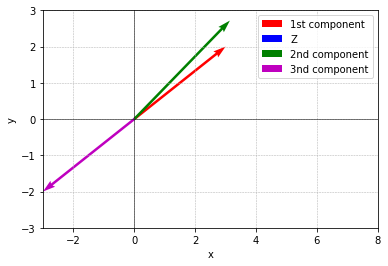
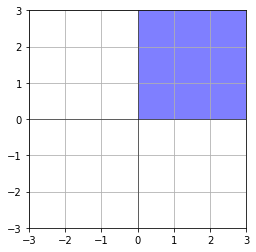
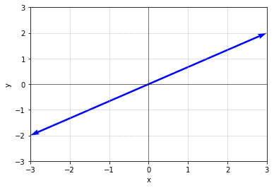
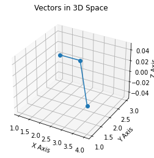

import numpy as np
import matplotlib.pyplot as pltImport
학습 목표
- \(PA = LU\)
- Vector spaces and subspaces
- Permutation P: execute row exchanges 행 교환을 실행하는 행렬인 치환행렬
- P = Identity matrix with reordered rows
\(A = Lu = \begin{bmatrix} 1 & 0 & 0 & 0 \\ x & 1 & 0 & 0 \\ x & x & 1 & 0 \\ x & x & x & 1 \end{bmatrix} \begin{bmatrix} 1 & 0 & 0 & 0 \\ 0 & 1 & 0 & 0 \\ 0 & 0 & 1 & 0 \\ 0 & 0 & 0 & 1 \end{bmatrix}\)
- 위에서 아무런 행동할 필요없어서 단위행렬을 곱해준 것이고, 여기서 단위행렬이 \(P\)행렬이 된다.
- 결국 \(PA = Lu\)
- 여기서 모든 invertible \(A\)가 가능하다.
- P는 총 \(n!\)개 가질 수 있음
- = counts reorderings
- = counts all \(n \times n\) permutations
- \(P^{-1} = P^T\), \(P^TP = I\)
- Transpose
\(\begin{bmatrix} 1 & 3 \\ 2 & 3 \\ 4 & 1\end{bmatrix}^T = \begin{bmatrix} 1 & 2 & 4 \\ 3 & 3 & 1 \end{bmatrix}\)
- \((A^T)_{ij} = A_{ji}\)
- Symmetric matrices
\(A^T = A\)
ex) \(\begin{bmatrix} 3 & 1 & 7 \\ 1 & 2 & 9 \\ 7 & 9 & 4\end{bmatrix}\)
\(R^T R\) is always symmetric.
- 증명: \((R^T R)^T = R^T R^{TT}\)
ex) \(\begin{bmatrix} 1 & 3 \\ 2 & 3 \\ 4 & 1\\\end{bmatrix} \begin{bmatrix} 1 & 2 & 4 \\ 3 & 3 & 1 \end{bmatrix} = \begin{bmatrix} 10 & 11 & 7 \\ 11 & - & - \\ 7 & - & - \end{bmatrix}\)
- Vector Spaces
\(R^2\) = real number = all 2-dimensional real vectors = x-y plane
ex) \(\begin{bmatrix} 3 \\ 2 \end{bmatrix} \begin{bmatrix} 0 \\ 0 \end{bmatrix} \begin{bmatrix} \pi \\ e\end{bmatrix}\)
every vector has zero vector
# 벡터 정의
v1 = np.array([3, 2])
v2 = np.array([0, 0])
v3 = np.array([np.pi, np.e])
v4 = np.array([-3, -2])
# 그림 설정
plt.figure()
# 원점에서 벡터 v1을 시작하여 그림
plt.quiver(0, 0, v1[0], v1[1], angles='xy', scale_units='xy', scale=1, color='r', label='1st component')
# 원점에서 벡터 v2을 시작하여 그림 (영벡터이므로 표시하지 않음)
plt.quiver(0, 0, v2[0], v2[1], angles='xy', scale_units='xy', scale=1, color='b', label='Z')
# 원점에서 벡터 v3을 시작하여 그림
plt.quiver(0, 0, v3[0], v3[1], angles='xy', scale_units='xy', scale=1, color='g', label='2nd component')
plt.quiver(0, 0, v4[0], v4[1], angles='xy', scale_units='xy', scale=1, color='m', label='3nd component')
# 축 범위 설정
plt.xlim(-3, 8)
plt.ylim(-3, 3)
# 축 표시
plt.axhline(0, color='k', linewidth=0.5)
plt.axvline(0, color='k', linewidth=0.5)
# 그리드 표시
plt.grid(True, linestyle='--', linewidth=0.5)
# 벡터 표시
plt.xlabel('x')
plt.ylabel('y')
# 벡터 레이블 표시
plt.legend()
# 그림 보이기
plt.show()
\(R^3\) = all column vectors with 3 real components
\(\begin{bmatrix} 3 \\ 2 \\ 0 \end{bmatrix}\)이것은 \(R^3\)! \(R^2\) 아님!
\(R^n\) = all column vectors with N real components
not a vector space
아래는 \(\frac{1}{4}\) 영역임
it is not closed under multiplication by all real number
# 사각형의 꼭짓점 좌표
x = [0, 0, 3, 3, 0]
y = [0, 3, 3, 0, 0]
# 사각형을 그림
plt.fill(x, y, color='blue', alpha=0.5)
# 축 범위 설정
plt.xlim(-3, 3)
plt.ylim(-3, 3)
# 축 표시
plt.axhline(0, color='k', linewidth=0.5)
plt.axvline(0, color='k', linewidth=0.5)
# 그래프 표시
plt.grid(True)
plt.gca().set_aspect('equal', adjustable='box')
plt.show()
ex) a vector space inside \(R^2\) = subspace of \(R^2\)
- double vector 등 any vector is ok.
- multiple 가능해야 함 (곱해서 벡터를 나타낼 수 있어야 함(?))
- line in \(R^2\) through zero vector. \(\begin{bmatrix} 0 \\ 0\end{bmatrix}\) 통과해야 함.
# 벡터 정의
v1 = np.array([3, 2])
v2 = np.array([0, 0])
v3 = np.array([np.pi, np.e])
v4 = np.array([-3, -2])
# 그림 설정
plt.figure()
# 원점에서 벡터 v1을 시작하여 그림
plt.quiver(0, 0, v1[0], v1[1], angles='xy', scale_units='xy', scale=1, color='b', label='1st component')
# 원점에서 벡터 v2을 시작하여 그림 (영벡터이므로 표시하지 않음)
plt.quiver(0, 0, v2[0], v2[1], angles='xy', scale_units='xy', scale=1, color='b', label='Z')
# 원점에서 벡터 v3을 시작하여 그림
plt.quiver(0, 0, v4[0], v4[1], angles='xy', scale_units='xy', scale=1, color='b', label='3nd component')
# 축 범위 설정
plt.xlim(-3, 3)
plt.ylim(-3, 3)
# 축 표시
plt.axhline(0, color='k', linewidth=0.5)
plt.axvline(0, color='k', linewidth=0.5)
# 그리드 표시
plt.grid(True, linestyle='--', linewidth=0.5)
# 벡터 표시
plt.xlabel('x')
plt.ylabel('y')
# 그림 보이기
plt.show()
- subspaces of \(R^2\)
- all of \(R^2\)
- any line through \(\begin{bmatrix} 0 \\ 0 \end{bmatrix}\) \(\to\) \(L\)
- zero vector only \(Z\)
\(\begin{bmatrix} 1 & 3 \\ 2 & 3 \\ 4 & 1 \end{bmatrix}\)
- columns in \(R^3\)
- all their combinations from a subspace
- called column space \(C(A)\)
- plane = \(C(A)\) = all vectors \(Av\)
- 이떄, \(Av\) = \(v_1\begin{bmatrix} 1 \\ 2 \\ 4 \end{bmatrix} v_2 \begin{bmatrix} 3 \\ 3 \\ 1 \end{bmatrix}\)
위에서 column 1, column 2로 나눠 보기
\(\to\) column space로 subspace보기 가능
- The column space consists of all combination of the columns
import numpy as np
import matplotlib.pyplot as plt
from mpl_toolkits.mplot3d import Axes3D
# 주어진 행렬
matrix = np.array([[1, 3],
[2, 3],
[4, 1]])
# 행렬을 열 벡터로 분할
column1 = matrix[:, 0]
column2 = matrix[:, 1]
zeros = np.zeros_like(column1) # z 축은 0으로 고정
# 3차원 그래프 생성
fig = plt.figure()
ax = fig.add_subplot(111, projection='3d')
# 열 벡터를 그래프에 추가
ax.plot(column1, column2, zeros, marker='o')
# 그래프에 라벨 추가
ax.set_xlabel('X Axis')
ax.set_ylabel('Y Axis')
ax.set_zlabel('Z Axis')
plt.title('Vectors in 3D Space')
plt.show()
참고 가능: https://math.mit.edu/~gs/dela/dela_5-1.pdf